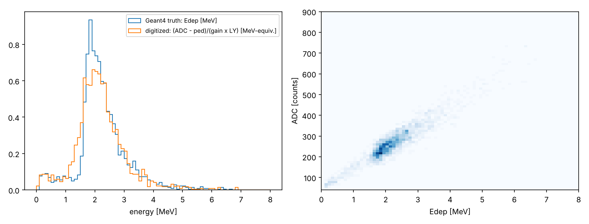

Idle> /hits/list
A block that absorbs energy is not yet a detector. You attach a sensitive detector, apply the threshold where it belongs, require two layers to fire in time, and turn deposited energy into an ADC number. Then you measure an efficiency the way an experimentalist would: for a stated population, with an error bar.
一块吸收能量的材料还不是探测器。你将给它挂上灵敏探测器，把阈值放在该放的地方，要求两层在时间上同时触发，并把沉积能量变成 ADC 数值。然后像实验物理学家那样测量效率：针对给定的入射总体，并附上误差棒。
/run/initializelearning goals学习目标
ConstructSDandField().编写灵敏探测器sensitive detector和击中hit类，并在 ConstructSDandField() 中注册。/control/manual6.1 · deposited is not detected6.1 · 沉积不等于探测到
Definition 6.1 · Sensitive detector and hit灵敏探测器与击中
A sensitive detector (G4VSensitiveDetector) is callback code bound to a logical volume. Each step in that volume gives it a chance to accumulate the detector response. A hit (G4VHit) is a record of an interaction or an accumulated response; it is not a hardware trigger. A realistic chain is step → hit accumulation → digit → trigger/readout.
灵敏探测器（G4VSensitiveDetector）是绑定在逻辑体上的回调代码，该体积中的每一步都让它有机会累加探测器响应。击中（G4VHit）是一次相互作用或累积响应的记录，不等于硬件触发。真实的链条是：步 → 击中累加 → 数字化信号 → 触发/读出。
Example 6.1 · Mission 5: a 10 × 10 cm² muon counter任务 5：10 × 10 cm² 缪子计数器
Make the scintillator a sensitive detector and accumulate all deposits in it per event. After the event, apply ΔEth = 0.1 MeV and declare a signal if the response exceeds it. Illuminate it with a documented downward muon model (a vertical beam and a cos²θ distribution are not the same thing) and count the fraction of generated muons that give a signal: the efficiency for that population and threshold.
把闪烁体设为灵敏探测器，逐事例累加其中的全部沉积。事例结束后施加 ΔEth = 0.1 MeV，响应超过它即判为有信号。用一个有明确说明的向下缪子模型照射它（竖直束流与 cos²θ 分布不是一回事），统计产生信号的缪子比例：这就是针对该总体和该阈值的效率。
const G4int copy = step->GetPreStepPoint()->GetTouchable()->GetCopyNumber(); // which counter auto* hit = (*fHitsCollection)[copy]; hit->AddEdep(edep); // accumulate; NO threshold here hit->AddEvis(edep / (1. + kBirks * edep / length)); // Birks per step
Intuition直觉
The sensitive detector is a ledger. Every transport step adds to the event's response; the hardware-like threshold is applied after the ledger is closed. That keeps an implementation detail of the transport engine, how many steps it happened to take, from becoming a fake detector effect.
灵敏探测器就像一本账簿：每个输运步都往这一事例的响应上记一笔，类似硬件的阈值在账簿结清之后才施加。这样，输运引擎的实现细节（恰好走了几步）就不会变成假的探测器效应。
Think about it想一想
Raise the event-level threshold from 0.1 MeV to 1 MeV: how does the efficiency change? And to 1.6 MeV, just below the most probable deposit of 1.78 MeV in 1 cm? Step 4 answers both with /week05/edepThreshold.
把事例级阈值从 0.1 MeV 提高到 1 MeV，效率如何变化？提高到 1.6 MeV（刚好低于 1 cm 中 1.78 MeV 的最可几沉积）呢？第 4 步用 /week05/edepThreshold 回答这两个问题。
Research thread · SHINE scintillator prototype研究线索 · SHINE 闪烁体原型
Treat this counter as the first prototype module of a muon-source detector. The geometry is simple; the questions are experimental: how much energy, how much light, what crosses threshold, and what survives the electronics.
把这个计数器当作缪子源探测器的第一个原型模块。几何很简单，问题却是实验性的：沉积多少能量、产生多少光、什么越过阈值、什么能穿过电子学留下来。
/week05/noise 0.36.2–6.4 · trigger and digitizer6.2–6.4 · 触发与数字化
Dark noise, environmental radiation and electronics noise make pulses that are not the event of interest. The classic cure is coincidence: two separated layers must cross threshold within a time window. For one digitized amplitude and time per layer,
暗噪声、环境辐射和电子学噪声会产生并非目标事例的脉冲。经典的解决办法是符合：两层分开的探测器必须在一个时间窗口内同时超阈。每层给出一个数字化幅度和时间，
For two uncorrelated channels firing at rates R₁ and R₂, the accidental coincidence rate is Racc = 2τR₁R₂ for a window |Δt| < τ (standard result, not in the textbook). Only events with T true go into the ntuple.
两个互不相关、计数率分别为 R₁、R₂ 的通道，在窗口 |Δt| < τ 下的偶然符合率为 Racc = 2τR₁R₂（标准结论，教材未给出）。只有 T 为真的事例才写入 ntuple。
Example 6.2 · Mission 5C: a two-layer muon trigger任务 5C：双层缪子触发
Place two 10 × 10 cm² scintillators 20 cm apart and digitize each independently. Measure single-layer rates, the coincidence rate, and the fraction satisfying a 20 ns window. Add random noise pulses to each layer and show that coincidence suppresses accidental triggers. Compare with the two-layer telescope of Week 1.
把两块 10 × 10 cm² 的闪烁体相隔 20 cm 放置，分别数字化。测量单层计数率、符合计数率，以及满足 20 ns 窗口的比例。再给每层加入随机噪声脉冲，证明符合能压制偶然触发。并与第 1 周的双层望远镜比较。
The toy digitizer maps the quenched visible energy to photoelectrons (Poisson), multiplies by a gain, adds a pedestal and Gaussian electronics noise. It does not reproduce a particular product. It makes the truth → response → measurement boundary visible. Its numbers (25 p.e./MeV, 4 counts/p.e., pedestal 50, noise 3 counts, kB = 0.126 mm/MeV) are stated assumptions.
玩具数字化器把猝灭后的可见能量映射为光电子数（泊松），乘以增益，再加上基线和高斯电子学噪声。它不复现任何具体产品，而是让“真相 → 响应 → 测量”的边界变得可见。其中的数值（25 p.e./MeV、4 道/p.e.、基线 50、噪声 3 道、kB = 0.126 mm/MeV）都是明确声明的假设。
| Model模型 | What is simulated模拟内容 | When to use it适用场合 |
|---|---|---|
| Parameterization参数化 | Edep → Npe → ADC | large arrays, early design scans, fast optimization大型阵列、早期设计扫描、快速优化 |
| Optical transport光学输运 | individual photons, surfaces, attenuation, timing单个光子、表面、衰减、时间 | light-guide design, timing studies, non-uniformity光导设计、时间研究、非均匀性 |
Neither is universally more correct. The research question sets the required fidelity: tracking millions of optical photons per channel makes a design scan impractical, while a parameterization cannot tell you how a surface treatment changes light collection.
两者没有哪个普遍更正确，所需保真度由研究问题决定：每个通道追踪数百万个光学光子会让设计扫描无法进行，而参数化模型无法告诉你表面处理如何改变光收集。
History历史
In 1944 Curran and Baker coupled a photomultiplier to a scintillating crystal and turned deposited energy into an amplifiable electrical signal. That combination became the backbone of calorimeters and trigger systems in nearly every particle-physics experiment, including the plastic scintillators of the SHINE muon source.
1944 年，Curran 和 Baker 把光电倍增管与闪烁晶体耦合，把沉积能量变成可放大的电信号。这一组合成为几乎所有粒子物理实验中量能器和触发系统的基石，也包括 SHINE 缪子源的塑料闪烁体。
/run/beamOn 4000interactive toy model交互玩具模型
Edep (truth) vs ADC (measurement), 4,000 toy muonsEdep（真相）对 ADC（测量），4,000 个玩具缪子
True rate default: about 1 muon/cm²/min (PDG, horizontal detector) on 100 cm², times the ≈ 0.14 fraction that also crosses the second counter (Geant4 step 3) ≈ 0.25–0.3 Hz.真实率默认值：约 1 个缪子/cm²/min（PDG，水平探测器）乘 100 cm²，再乘同时穿过第二个计数器的比例 ≈ 0.14（第 3 步 Geant4 结果），约 0.25–0.3 Hz。
Dashed: accidentals vs τ. Dots: accidentals and true rate at the chosen τ.虚线：偶然符合率随 τ 的变化。圆点：所选 τ 下的偶然符合率与真实率。
TOY MODEL · approximations近似
Edep from a Moyal approximation to Landau (MPV 1.78 MeV from our Geant4 run, width ξ = 0.086 MeV for 1 cm of PVT). Birks applied once per event with dE/dx = Edep/1 cm (the Geant4 code applies it per step). Poisson photoelectrons, fixed gain, Gaussian noise; no PMT gain fluctuations, no pulse shape. Coincidence: two independent Poisson trains; 2τR₁R₂ is the standard accidental rate, checked against a short Monte Carlo.
Edep 用 Moyal 分布近似朗道分布（最可几值 1.78 MeV 取自我们的 Geant4 运行，1 cm PVT 的宽度 ξ = 0.086 MeV）。Birks 每事例施加一次，取 dE/dx = Edep/1 cm（Geant4 代码是逐步施加）。泊松光电子、固定增益、高斯噪声；没有 PMT 增益涨落，也没有脉冲形状。符合：两列独立泊松脉冲；2τR₁R₂ 是标准偶然符合率，并用简短的蒙特卡罗核对。
/control/execute trigger.machands-on · Missions 5, 5C, 6动手任务 · 任务 5、5C、6
Outputs are real Geant4 11.4.p01 runs of these files with the course test physics list. Efficiencies here are set by geometry and threshold, so FTFP_BERT should give the same values within the quoted binomial errors.
下面的输出来自这些文件在 Geant4 11.4.p01 上的真实运行，使用课程测试物理列表。这里的效率由几何和阈值决定，所以 FTFP_BERT 应在所给的二项误差内得到相同的值。
cmake_minimum_required(VERSION 3.16)
project(Week05 LANGUAGES CXX)
set(CMAKE_CXX_STANDARD 17)
set(CMAKE_CXX_STANDARD_REQUIRED ON)
find_package(Geant4 REQUIRED ui_all vis_all)
include(${Geant4_USE_FILE})
file(GLOB sources CONFIGURE_DEPENDS ${PROJECT_SOURCE_DIR}/src/*.cc)
file(GLOB headers CONFIGURE_DEPENDS ${PROJECT_SOURCE_DIR}/include/*.hh)
add_executable(week05 week05.cc ${sources} ${headers})
target_include_directories(week05 PRIVATE include)
target_link_libraries(week05 PRIVATE ${Geant4_LIBRARIES})
foreach(_f trigger.mac vis.mac plot_digitization.py)
configure_file(${PROJECT_SOURCE_DIR}/${_f} ${PROJECT_BINARY_DIR}/${_f} COPYONLY)
endforeach()#include "ActionInitialization.hh"
#include "DetectorConstruction.hh"
#include "FTFP_BERT.hh"
#include "G4RunManagerFactory.hh"
#include "G4UIExecutive.hh"
#include "G4UImanager.hh"
#include "G4VisExecutive.hh"
int main(int argc, char** argv)
{
// Serial keeps the histogram code simple this week; Week 8 switches to
// the textbook's G4RunManagerType::Default and merges threads.
auto* runManager =
G4RunManagerFactory::CreateRunManager(G4RunManagerType::Serial);
runManager->SetUserInitialization(new DetectorConstruction());
runManager->SetUserInitialization(new FTFP_BERT());
runManager->SetUserInitialization(new ActionInitialization());
runManager->Initialize();
auto* uiManager = G4UImanager::GetUIpointer();
if (argc > 1) {
// headless: ./week05 trigger.mac
uiManager->ApplyCommand("/control/execute " + G4String(argv[1]));
} else {
// diagnosis only: ./week05 opens the viewer
auto* ui = new G4UIExecutive(argc, argv);
auto* visManager = new G4VisExecutive();
visManager->Initialize();
uiManager->ApplyCommand("/control/execute vis.mac");
ui->SessionStart();
delete visManager;
delete ui;
}
delete runManager;
return 0;
}#ifndef DetectorConstruction_h
#define DetectorConstruction_h 1
#include "G4VUserDetectorConstruction.hh"
class DetectorConstruction : public G4VUserDetectorConstruction
{
public:
G4VPhysicalVolume* Construct() override;
void ConstructSDandField() override;
};
#endif#include "DetectorConstruction.hh"
#include "MuonSD.hh"
#include "G4Box.hh"
#include "G4LogicalVolume.hh"
#include "G4NistManager.hh"
#include "G4PVPlacement.hh"
#include "G4SDManager.hh"
#include "G4SystemOfUnits.hh"
// Mission 5 / 5C: two 10 x 10 x 1 cm3 plastic counters, 20 cm apart along z.
// One logical volume "Counter", placed twice with copy numbers 0 (top) and 1 (bottom).
// The world is 3 m wide so the toy cosmic source plane (up to +-1.5 m) stays inside it.
G4VPhysicalVolume* DetectorConstruction::Construct()
{
auto* nist = G4NistManager::Instance();
auto* air = nist->FindOrBuildMaterial("G4_AIR");
auto* scint = nist->FindOrBuildMaterial("G4_PLASTIC_SC_VINYLTOLUENE");
auto* logicWorld = new G4LogicalVolume(new G4Box("World", 1.5 * m, 1.5 * m, 0.5 * m), air, "World");
auto* physWorld = new G4PVPlacement(nullptr, {}, logicWorld, "World", nullptr, false, 0, true);
auto* logicCounter =
new G4LogicalVolume(new G4Box("Counter", 5. * cm, 5. * cm, 0.5 * cm), scint, "Counter");
new G4PVPlacement(nullptr, G4ThreeVector(0, 0, -10. * cm), logicCounter, "Counter", logicWorld, false, 0, true);
new G4PVPlacement(nullptr, G4ThreeVector(0, 0, +10. * cm), logicCounter, "Counter", logicWorld, false, 1, true);
return physWorld;
}
void DetectorConstruction::ConstructSDandField()
{
auto* sdManager = G4SDManager::GetSDMpointer();
auto* muonSD = new MuonSD("MuonCounter/MuonSD", "MuonHitsCollection");
sdManager->AddNewDetector(muonSD);
// "Counter" must match the logical volume's name from Construct()
SetSensitiveDetector("Counter", muonSD);
}#ifndef MuonHit_h
#define MuonHit_h 1
#include "G4THitsCollection.hh"
#include "G4ThreeVector.hh"
#include "G4VHit.hh"
// One hit = the accumulated response of ONE counter in ONE event.
class MuonHit : public G4VHit
{
public:
void AddEdep(G4double e) { fEdep += e; }
void AddEvis(G4double e) { fEvis += e; }
void SetTimeIfEarlier(G4double t) { if (t < fTime) fTime = t; }
void SetPos(const G4ThreeVector& p) { fPos = p; }
G4double GetEdep() const { return fEdep; }
G4double GetEvis() const { return fEvis; } // after Birks quenching
G4double GetTime() const { return fTime; } // earliest deposit, global time
const G4ThreeVector& GetPos() const { return fPos; }
private:
G4double fEdep = 0.;
G4double fEvis = 0.;
G4double fTime = 1e30;
G4ThreeVector fPos;
};
using MuonHitsCollection = G4THitsCollection<MuonHit>;
#endif#ifndef MuonSD_h
#define MuonSD_h 1
#include "MuonHit.hh"
#include "G4VSensitiveDetector.hh"
class MuonSD : public G4VSensitiveDetector
{
public:
MuonSD(const G4String& name, const G4String& hitsCollectionName);
void Initialize(G4HCofThisEvent* hce) override;
G4bool ProcessHits(G4Step* step, G4TouchableHistory*) override;
private:
MuonHitsCollection* fHitsCollection = nullptr;
static constexpr G4int kNCounters = 2;
};
#endif#include "MuonSD.hh"
#include "G4HCofThisEvent.hh"
#include "G4SDManager.hh"
#include "G4Step.hh"
#include "G4SystemOfUnits.hh"
namespace {
// Birks' law per STEP: dEvis = dE / (1 + kB * dE/dx).
// kB = 0.126 mm/MeV is a typical value for polyvinyltoluene scintillator
// (Birks 1964 and later fits; it depends on the product, so calibrate it).
constexpr G4double kBirks = 0.126 * mm / MeV;
}
MuonSD::MuonSD(const G4String& name, const G4String& hitsCollectionName)
: G4VSensitiveDetector(name)
{
collectionName.insert(hitsCollectionName);
}
void MuonSD::Initialize(G4HCofThisEvent* hce)
{
fHitsCollection = new MuonHitsCollection(SensitiveDetectorName, collectionName[0]);
G4int hcID = G4SDManager::GetSDMpointer()->GetCollectionID(fHitsCollection);
hce->AddHitsCollection(hcID, fHitsCollection);
// One hit object per counter for this event. The threshold is deliberately
// NOT applied here: Geant4 may split one physical traversal into many steps.
for (G4int i = 0; i < kNCounters; ++i) fHitsCollection->insert(new MuonHit());
}
G4bool MuonSD::ProcessHits(G4Step* step, G4TouchableHistory*)
{
const G4double edep = step->GetTotalEnergyDeposit();
if (edep <= 0.) return false;
const G4int copy = step->GetPreStepPoint()->GetTouchable()->GetCopyNumber();
auto* hit = (*fHitsCollection)[copy];
const G4double length = step->GetStepLength();
const G4double evis = (length > 0.) ? edep / (1. + kBirks * edep / length) : edep;
hit->AddEdep(edep);
hit->AddEvis(evis);
hit->SetTimeIfEarlier(step->GetPreStepPoint()->GetGlobalTime());
hit->SetPos(step->GetPreStepPoint()->GetPosition());
return true;
}#ifndef ToyScintillatorDigitizer_h
#define ToyScintillatorDigitizer_h 1
#include "globals.hh"
// Mission 6: deposited energy -> photoelectrons -> ADC number and a pulse time.
// Every number below is a TOY assumption, not a property of a real product.
struct Signal
{
G4double adc = 0.; // ADC counts
G4double time = 0.; // ns
G4bool hasPulse = false;
};
class ToyScintillatorDigitizer
{
public:
// evis: Birks-quenched visible energy (already applied per step in MuonSD)
Signal Digitize(G4double evis, G4double trueTime) const;
Signal NoisePulse() const; // a random background pulse in the readout window
G4double fPedestal = 50.; // ADC counts
G4double fLightYield = 25.; // photoelectrons per MeV visible (collected)
G4double fGain = 4.; // ADC counts per photoelectron
G4double fElectronicNoiseSigma = 3.;// ADC counts
G4double fTimeResolution = 0.5; // ns, Gaussian
G4double fWindow = 1000.; // ns, readout window for noise pulses
G4double fNoiseMeanPE = 15.; // mean amplitude of a background pulse
};
#endif#include "ToyScintillatorDigitizer.hh"
#include "G4Poisson.hh"
#include "G4SystemOfUnits.hh"
#include "Randomize.hh"
Signal ToyScintillatorDigitizer::Digitize(G4double evis, G4double trueTime) const
{
Signal s;
s.adc = fPedestal + G4RandGauss::shoot(0., fElectronicNoiseSigma);
if (evis <= 0.) return s; // no light: pedestal + noise only
const G4double meanPE = fLightYield * evis / MeV;
const G4int npe = static_cast<G4int>(G4Poisson(meanPE));
s.adc += fGain * npe;
s.time = trueTime / ns + G4RandGauss::shoot(0., fTimeResolution);
s.hasPulse = npe > 0;
return s;
}
Signal ToyScintillatorDigitizer::NoisePulse() const
{
Signal s;
const G4int npe = 1 + static_cast<G4int>(G4Poisson(fNoiseMeanPE * G4UniformRand() * 2.));
s.adc = fPedestal + fGain * npe + G4RandGauss::shoot(0., fElectronicNoiseSigma);
s.time = (G4UniformRand() - 0.5) * fWindow;
s.hasPulse = true;
return s;
}#ifndef EventAction_h
#define EventAction_h 1
#include "ToyScintillatorDigitizer.hh"
#include "G4UserEventAction.hh"
#include "globals.hh"
class RunAction;
class G4GenericMessenger;
class EventAction : public G4UserEventAction
{
public:
explicit EventAction(RunAction* runAction);
void EndOfEventAction(const G4Event* event) override;
private:
RunAction* fRunAction = nullptr;
G4int fHitsCollectionID = -1; // looked up lazily: the SD does not exist yet in the constructor
G4GenericMessenger* fMessenger = nullptr;
ToyScintillatorDigitizer fDigitizer;
G4double fEdepThreshold; // Example 6.1: 0.1 MeV on the event-level deposit
G4double fAdcThreshold; // trigger threshold, ADC counts above zero
G4double fCoincidenceWindow; // ns
G4double fNoiseProbability; // per counter per event, set by /week05/noise
};
#endif#include "EventAction.hh"
#include "MuonHit.hh"
#include "RunAction.hh"
#include "G4AnalysisManager.hh"
#include "G4Event.hh"
#include "G4GenericMessenger.hh"
#include "G4HCofThisEvent.hh"
#include "G4SDManager.hh"
#include "G4SystemOfUnits.hh"
#include "Randomize.hh"
#include <cmath>
EventAction::EventAction(RunAction* runAction)
: fRunAction(runAction),
fEdepThreshold(0.1 * MeV),
fAdcThreshold(70.), // pedestal 50 + 5 photoelectrons x 4 counts
fCoincidenceWindow(20.), // ns, as on the bench
fNoiseProbability(0.)
{
// /week05/noise 0.3 -> each counter gets a background pulse in 30% of events
fMessenger = new G4GenericMessenger(this, "/week05/", "Week 5 trigger study");
fMessenger->DeclareProperty("noise", fNoiseProbability,
"probability of a background pulse per counter per event");
// /week05/edepThreshold 1 MeV -> the Think-about-it question of section 6.1
fMessenger->DeclarePropertyWithUnit("edepThreshold", "MeV", fEdepThreshold,
"event-level Edep threshold per counter");
}
void EventAction::EndOfEventAction(const G4Event* event)
{
if (fHitsCollectionID < 0)
fHitsCollectionID = G4SDManager::GetSDMpointer()->GetCollectionID("MuonHitsCollection");
auto* hce = event->GetHCofThisEvent();
if (!hce) return;
auto* hits = static_cast<MuonHitsCollection*>(hce->GetHC(fHitsCollectionID));
if (!hits || hits->entries() < 2) return;
// 1. Truth-level detector response and the Example 6.1 threshold (event level!)
const G4double edep[2] = {(*hits)[0]->GetEdep(), (*hits)[1]->GetEdep()};
const G4bool fired[2] = {edep[0] >= fEdepThreshold, edep[1] >= fEdepThreshold};
// 2. Digitization: per counter, muon pulse if light was produced, else maybe noise
Signal sig[2];
for (G4int i = 0; i < 2; ++i) {
sig[i] = fDigitizer.Digitize((*hits)[i]->GetEvis(), (*hits)[i]->GetTime());
if (!sig[i].hasPulse && G4UniformRand() < fNoiseProbability) sig[i] = fDigitizer.NoisePulse();
}
// 3. Trigger: both above threshold AND inside the coincidence window
const G4bool bothAbove = (sig[0].adc > fAdcThreshold) && (sig[1].adc > fAdcThreshold);
const G4bool trigger = bothAbove && std::abs(sig[0].time - sig[1].time) < fCoincidenceWindow;
fRunAction->Count(fired[0], fired[1], bothAbove, trigger);
auto* analysis = G4AnalysisManager::Instance();
analysis->FillNtupleDColumn(0, edep[0] / MeV);
analysis->FillNtupleDColumn(1, edep[1] / MeV);
analysis->FillNtupleDColumn(2, (*hits)[0]->GetEvis() / MeV);
analysis->FillNtupleDColumn(3, (*hits)[1]->GetEvis() / MeV);
analysis->FillNtupleDColumn(4, sig[0].adc);
analysis->FillNtupleDColumn(5, sig[1].adc);
analysis->FillNtupleDColumn(6, sig[0].time - sig[1].time);
analysis->FillNtupleIColumn(7, trigger ? 1 : 0);
analysis->AddNtupleRow();
}#ifndef RunAction_h
#define RunAction_h 1
#include "G4UserRunAction.hh"
#include "globals.hh"
class G4Run;
class RunAction : public G4UserRunAction
{
public:
RunAction();
void BeginOfRunAction(const G4Run*) override;
void EndOfRunAction(const G4Run* run) override;
void Count(G4bool fired0, G4bool fired1, G4bool bothAbove, G4bool trigger)
{
fN0 += fired0; fN1 += fired1; fBoth += (fired0 && fired1);
fAbove += bothAbove; fTrig += trigger;
}
private:
G4int fN0 = 0, fN1 = 0, fBoth = 0, fAbove = 0, fTrig = 0;
};
#endif#include "RunAction.hh"
#include "G4AnalysisManager.hh"
#include "G4Run.hh"
#include "G4ios.hh"
#include <cmath>
#include <iomanip>
RunAction::RunAction()
{
auto* analysis = G4AnalysisManager::Instance();
analysis->SetDefaultFileType("root");
analysis->SetFileName("muons");
analysis->CreateNtuple("Muons", "Two-layer counter, one row per event");
analysis->CreateNtupleDColumn("Edep0"); // MeV, truth
analysis->CreateNtupleDColumn("Edep1");
analysis->CreateNtupleDColumn("Evis0"); // MeV, after Birks
analysis->CreateNtupleDColumn("Evis1");
analysis->CreateNtupleDColumn("ADC0"); // counts, digitized
analysis->CreateNtupleDColumn("ADC1");
analysis->CreateNtupleDColumn("dt"); // ns, t0 - t1
analysis->CreateNtupleIColumn("trigger");
analysis->FinishNtuple();
}
void RunAction::BeginOfRunAction(const G4Run*)
{
fN0 = fN1 = fBoth = fAbove = fTrig = 0;
G4AnalysisManager::Instance()->OpenFile();
}
void RunAction::EndOfRunAction(const G4Run* run)
{
const G4int n = run->GetNumberOfEvent();
if (n > 0) {
auto line = [n](const char* label, G4int k) {
const G4double e = static_cast<G4double>(k) / n;
G4cout << " " << std::left << std::setw(34) << label << std::right << std::setw(6) << k
<< " eff = " << std::fixed << std::setprecision(4) << e
<< " +/- " << std::sqrt(e * (1 - e) / n) << std::defaultfloat << G4endl;
};
G4cout << "Run complete: " << n << " events." << G4endl;
line("top counter fired (Edep > thr)", fN0);
line("bottom counter fired", fN1);
line("both fired (truth level)", fBoth);
line("both ADC above threshold", fAbove);
line("trigger (both + |dt|<20 ns)", fTrig);
}
auto* analysis = G4AnalysisManager::Instance();
analysis->Write();
analysis->CloseFile();
}#ifndef PrimaryGeneratorAction_h
#define PrimaryGeneratorAction_h 1
#include "G4String.hh"
#include "G4VUserPrimaryGeneratorAction.hh"
class G4ParticleGun;
class G4Event;
class G4GenericMessenger;
// A documented toy cosmic source: mu- of fixed energy, entering through a horizontal
// square plane above the telescope. Two angular models, chosen by /week05/gun/model:
// vertical : every muon along +z
// cos2 : sea-level intensity ~ cos^2(theta) per solid angle, crossing a plane,
// so the sampled density of cos(theta) is ~ cos^3 (Week 1, step 5)
class PrimaryGeneratorAction : public G4VUserPrimaryGeneratorAction
{
public:
PrimaryGeneratorAction();
~PrimaryGeneratorAction() override;
void GeneratePrimaries(G4Event* event) override;
private:
G4ParticleGun* fParticleGun = nullptr;
G4GenericMessenger* fMessenger = nullptr;
G4String fModel = "cos2";
G4double fHalfSize; // half side of the source plane
};
#endif#include "PrimaryGeneratorAction.hh"
#include "G4Event.hh"
#include "G4GenericMessenger.hh"
#include "G4ParticleGun.hh"
#include "G4ParticleTable.hh"
#include "G4PhysicalConstants.hh"
#include "G4SystemOfUnits.hh"
#include "Randomize.hh"
#include <cmath>
PrimaryGeneratorAction::PrimaryGeneratorAction() : fHalfSize(15. * cm)
{
fParticleGun = new G4ParticleGun(1);
fParticleGun->SetParticleDefinition(G4ParticleTable::GetParticleTable()->FindParticle("mu-"));
fParticleGun->SetParticleEnergy(4. * GeV); // ~ mean sea-level muon energy (PDG); a toy choice
fMessenger = new G4GenericMessenger(this, "/week05/gun/", "Toy cosmic source");
fMessenger->DeclareProperty("model", fModel, "vertical | cos2").SetCandidates("vertical cos2");
fMessenger->DeclarePropertyWithUnit("halfSize", "cm", fHalfSize, "half side of the source plane");
}
PrimaryGeneratorAction::~PrimaryGeneratorAction()
{
delete fMessenger;
delete fParticleGun;
}
void PrimaryGeneratorAction::GeneratePrimaries(G4Event* event)
{
// Sampled per EVENT, inside GeneratePrimaries (Week 2 lesson).
G4double cosTheta = 1.;
if (fModel == "cos2") cosTheta = std::pow(G4UniformRand(), 0.25);
const G4double sinTheta = std::sqrt(1. - cosTheta * cosTheta);
const G4double phi = twopi * G4UniformRand();
const G4double x = (2. * G4UniformRand() - 1.) * fHalfSize;
const G4double y = (2. * G4UniformRand() - 1.) * fHalfSize;
fParticleGun->SetParticlePosition(G4ThreeVector(x, y, -20. * cm)); // source plane above the top counter
fParticleGun->SetParticleMomentumDirection(
G4ThreeVector(sinTheta * std::cos(phi), sinTheta * std::sin(phi), cosTheta));
fParticleGun->GeneratePrimaryVertex(event);
}#include "ActionInitialization.hh"
#include "EventAction.hh"
#include "PrimaryGeneratorAction.hh"
#include "RunAction.hh"
void ActionInitialization::Build() const
{
SetUserAction(new PrimaryGeneratorAction());
auto* runAction = new RunAction();
SetUserAction(runAction);
SetUserAction(new EventAction(runAction));
}# ======== trigger.mac ======== # Mission 5 / 5C / 6: efficiencies, trigger and digitization /control/verbose 1 /run/verbose 0 # A. vertical muons over a 30 x 30 cm plane /week05/gun/model vertical /analysis/setFileName vertical /run/beamOn 20000 # B. cos^2 sea-level shape over the same plane /week05/gun/model cos2 /analysis/setFileName cos2 /run/beamOn 20000 # C. same, with background pulses in 30% of events per counter /week05/noise 0.3 /analysis/setFileName cos2_noise /run/beamOn 20000 # ======== vis.mac ======== /vis/open /vis/drawVolume /vis/viewer/set/viewpointThetaPhi 90 90 deg /vis/scene/add/trajectories smooth /vis/modeling/trajectories/create/drawByCharge /vis/scene/endOfEventAction accumulate /run/beamOn 20
"""Mission 6: compare the Geant4 truth (Edep) with the digitized observable (ADC).
pip install uproot matplotlib numpy
python3 plot_digitization.py cos2.root
"""
import sys
import matplotlib.pyplot as plt
import numpy as np
import uproot
path = sys.argv[1] if len(sys.argv) > 1 else "cos2.root"
with uproot.open(path) as f:
t = f["Muons"]
edep = t["Edep0"].array(library="np")
evis = t["Evis0"].array(library="np")
adc = t["ADC0"].array(library="np")
hit = edep > 0.1 # events where the top counter fired (truth)
print(f"events {len(edep)}, top counter fired {hit.sum()}")
print(f"mean Edep {edep[hit].mean():.3f} MeV, mean Evis {evis[hit].mean():.3f} MeV, "
f"Evis/Edep {evis[hit].mean() / edep[hit].mean():.3f}")
print(f"mean ADC above pedestal {(adc[hit] - 50).mean():.1f} counts")
fig, ax = plt.subplots(1, 2, figsize=(11, 4.2))
ax[0].hist(edep[hit], bins=80, range=(0, 8), density=True, histtype="step", label="Geant4 truth: Edep [MeV]")
ax[0].hist((adc[hit] - 50) / (4 * 25), bins=80, range=(0, 8), density=True, histtype="step",
label="digitized: (ADC - ped)/(gain x LY) [MeV-equiv.]")
ax[0].set_xlabel("energy [MeV]")
ax[0].legend(fontsize=8)
ax[1].hist2d(edep[hit], adc[hit], bins=80, range=((0, 8), (40, 900)), cmap="Blues")
ax[1].set_xlabel("Edep [MeV]")
ax[1].set_ylabel("ADC [counts]")
fig.tight_layout()
fig.savefig("digitization.png", dpi=150)
print("wrote digitization.png")ActionInitialization.hh is unchanged from Week 4.
ActionInitialization.hh 与第 4 周相同。
./week05 trigger.mac | grep -A5 "Run complete"
# A. vertical Run complete: 20000 events. top counter fired (Edep > thr) 2203 eff = 0.1101 +/- 0.0022 bottom counter fired 2209 eff = 0.1105 +/- 0.0022 both fired (truth level) 2191 eff = 0.1095 +/- 0.0022 both ADC above threshold 2191 eff = 0.1095 +/- 0.0022 trigger (both + |dt|<20 ns) 2191 eff = 0.1095 +/- 0.0022 # B. cos^2 Run complete: 20000 events. top counter fired (Edep > thr) 2198 eff = 0.1099 +/- 0.0022 bottom counter fired 917 eff = 0.0459 +/- 0.0015 both fired (truth level) 262 eff = 0.0131 +/- 0.0008 both ADC above threshold 255 eff = 0.0127 +/- 0.0008 trigger (both + |dt|<20 ns) 255 eff = 0.0127 +/- 0.0008 # C. cos^2 + background pulses, p = 0.3 per counter Run complete: 20000 events. top counter fired (Edep > thr) 2242 eff = 0.1121 +/- 0.0022 bottom counter fired 940 eff = 0.0470 +/- 0.0015 both fired (truth level) 318 eff = 0.0159 +/- 0.0009 both ADC above threshold 2053 eff = 0.1027 +/- 0.0021 trigger (both + |dt|<20 ns) 386 eff = 0.0193 +/- 0.0010
A. Vertical muons over 30 × 30 cm hit a 10 × 10 cm counter with probability 100/900 = 0.111: the efficiency is the geometry. B. Inclined muons spread out, so the bottom counter, 20 cm further away, sees fewer than half as many. Requiring the ADC threshold (5 p.e.) loses a few percent more than the 0.1 MeV truth threshold. C. Without timing, background pulses inflate "both above threshold" six-fold. The 20 ns window removes all but about 70 of them.
A. 在 30 × 30 cm 上均匀分布的竖直缪子击中 10 × 10 cm 计数器的概率为 100/900 = 0.111：效率就是几何。B. 倾斜缪子会散开，所以远 20 cm 的下层计数器看到的不到一半。ADC 阈值（5 p.e.）比 0.1 MeV 的真相阈值多损失几个百分点。C. 没有时间条件时，本底脉冲让“两路均超阈”膨胀到 6 倍；20 ns 窗口把它们去掉，只剩约 70 个。
"Both / top" is a conditional transmission. The Week 1 model for L = 0.1 m, d = 0.2 m, cos²θ crossing a plane gives ε = 0.128. Our cos² runs give 0.119–0.159 for single runs (σ ≈ 0.008 each) and 0.138 ± 0.004 over three repeats. The source plane is only 30 cm wide and 10 cm above the top counter, so steeply inclined muons that would hit the top counter are missing from the sample. Widen the source and the gap closes:
“双层 / 上层”是一个条件透射概率。第 1 周模型（L = 0.1 m、d = 0.2 m、cos²θ 穿过平面）给出 ε = 0.128。我们的 cos² 单次运行给出 0.119–0.159（每次 σ ≈ 0.008），三次重复合并为 0.138 ± 0.004。源平面只有 30 cm 宽、位于上层计数器上方 10 cm，因此本会击中上层计数器的大倾角缪子在样本中缺失。把源扩大，差距就会消失：
/week05/gun/model cos2 /week05/gun/halfSize 100 cm /analysis/setFileName wide /run/beamOn 400000
top counter fired (Edep > thr) 1093 eff = 0.0027 +/- 0.0001
both fired (truth level) 148 eff = 0.0004 +/- 0.0000
# both/top = 0.135 +/- 0.010, Week 1 model: 0.128The world is 3 m wide precisely so this 2 m source plane stays inside it. A vertex set in GeneratePrimaries is not checked (Week 2).
世界做成 3 m 宽，正是为了让这个 2 m 的源平面留在世界内。在 GeneratePrimaries 中设置的顶点不会被检查（第 2 周）。
/week05/gun/model vertical /analysis/setFileName thr /week05/edepThreshold 1 MeV /run/beamOn 20000 /week05/edepThreshold 1.6 MeV /run/beamOn 20000
top counter fired (Edep > thr) 2194 eff = 0.1097 +/- 0.0022 # 1 MeV: unchanged top counter fired (Edep > thr) 1876 eff = 0.0938 +/- 0.0021 # 1.6 MeV: cuts into the Landau peak
At 1 MeV nothing changes, because a 1 cm crossing deposits about 1.8 MeV. At 1.6 MeV the threshold bites into the low side of the Landau peak and 15% of crossings are lost. If you had wrongly applied 1 MeV to each step, the answer would depend on how many steps Geant4 used inside 1 cm, which is not a property of your detector.
1 MeV 时没有变化，因为穿过 1 cm 约沉积 1.8 MeV。1.6 MeV 时阈值切进了朗道峰的低能侧，丢失了 15% 的穿越。如果错误地对每一步施加 1 MeV，结果将取决于 Geant4 在 1 cm 内走了几步，而这并不是探测器的性质。
python3 plot_digitization.py cos2.root
events 20000, top counter fired 2198 mean Edep 2.251 MeV, mean Evis 2.200 MeV, Evis/Edep 0.977 mean ADC above pedestal 218.6 counts wrote digitization.png

Evis/Edep = 0.977 is Birks at minimum ionization: 1/(1 + 0.126 mm/MeV × 0.2 MeV/mm) = 0.976. Then 2.2 MeV × 25 p.e./MeV ≈ 55 p.e. × 4 counts ≈ 220 counts above pedestal. Every number in the chain is now traceable.
Evis/Edep = 0.977 正是最小电离时的 Birks 因子：1/(1 + 0.126 mm/MeV × 0.2 MeV/mm) = 0.976。于是 2.2 MeV × 25 p.e./MeV ≈ 55 p.e. × 4 道 ≈ 基线以上 220 道。链条中的每个数现在都可追溯。
/control/verbose 2self-check自测
G4Exceptioncommon errors常见错误
/control/saveHistoryreview notes复习要点
Remark · debt repaid, debt taken on小结 · 还清的债与新欠的债
Repaid: sensitive detector and hit are your own experience of setting a threshold and watching the efficiency move. Taken on: this detector answers "did something happen", not "with what momentum". Next week the physics list comes under scrutiny, then a magnetic field gives the detector its first momentum measurement.
还清的债：灵敏探测器和击中，已经成为你设置阈值、看着效率变化的亲身经验。新欠的债：这个探测器只能回答“有没有发生”，回答不了“带着多大动量”。下周先审视物理列表，之后磁场会让探测器第一次具备测量动量的能力。
/vis/ogl/export week05.gifshare this week分享本周成果